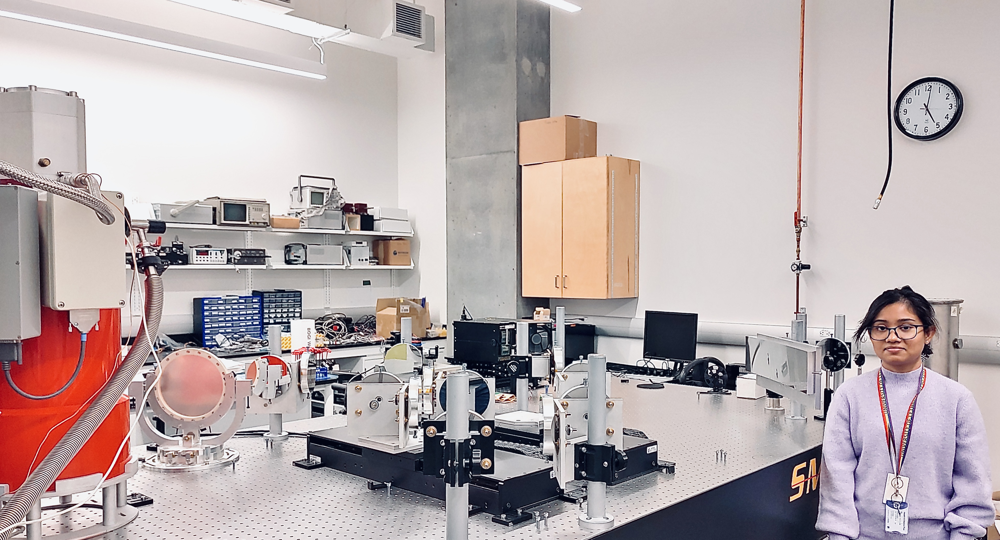

Technical Research & Architectural Innovation
Bridging Scientific Discovery with Production-Scale Machine Learning
ASTRA: A Foundational Framework for Astronomical SSL
Astra-CLR: Architected the first multi-filter time-series Transformer for the ZTF survey. Pre-trained on ~2.1M unlabeled light curves utilizing TensorFlow MirroredStrategy across a cluster of 8x NVIDIA A100 80GB GPUs.
High-Throughput Inference: Successfully scaled the pipeline to generate representational embeddings for ~70 Million samples (Nobs ≥ 2000), establishing a foundational-scale dataset for international team-wide research.
The framework utilizes a novel multi-view late-fusion architecture and "multi-scale temporal view" mapping strategy (an adaptation from "multi-crop" paradigm) to learn robust local-to-global representations from inhomogeneous multi-filter light curves, achieving a 77% fine-tuned accuracy across 12 broader variability classes.
Ongoing Expansion: Spearheading the development of "non-contrastive" framework within ASTRA to establish a universal scientific foundation model for multi-survey photometric data and is slated for upcoming release.
APPLIED AI & AGENTIC SYSTEMS
Sentinel-Hub (Multi-Agent System)
Challenge: Enterprise security data is often siloed, making coordinated multi-modal attacks (e.g., a deepfake video paired with a server breach) difficult to investigate.
Solution: Architected a stateful, 4-agent cyclic MAS with AI TRiSM guardrails that orchestrates Vision, Log, and Financial specialist agents to cross-validate findings and generate unified forensic reports.
DeepShield (Responsible AI)
Challenge: Baseline deepfake detectors suffer from high false-positive rates on authentic media and low sensitivity toward "seamless" manipulations.
Solution: Implemented Direct Preference Optimization (DPO) based PEFT approach to align a DINOv2 backbone with human-perceived risk, reducing False Positives by 51% while maintaining 97.5% sensitivity on high-fidelity fakes.
LogSentinel (Infrastructure Security)
Challenge: Detecting "Zero-Day" infrastructure anomalies in massive, unreadable HDFS log streams.
Solution: Engineered a semantic guard using distilled BERT embeddings and Zilliz (Milvus) to identify out-of-distribution system behaviors in real-time.
NeuralAudit (FinTech)
Challenge: Fraud detection in tabular data without historical labels.
Solution: Developed a Self-Supervised anomaly detector using bottleneck autoencoders to identify fraudulent transactions via Euclidean distance in high-dimensional latent space.
CanFin RAG (Finance)
Challenge: Standard RAG systems fail to accurately parse complex tables in multi-quarter financial disclosures.
Solution: Built a temporal RAG pipeline with Pydantic-enforced validation using markdown-based table parsing and metadata filtering to enable comparative financial analysis across fiscal periods.
Foundational Research: High-Precision Instrumentation
PROJECT: CHARACTERIZATION & OPTIMIZATION OF TES DETECTOR SYSTEMS (U LETHBRIDGE)
My foundational research at the University of Lethbridge focused on the far-infrared (far-IR) regime, a critical wavelength for interpreting cosmic origins. Working within the Astronomical Instrumentation Group (AIG), I specialized in the characterization of Transition-Edge-Sensor (TES) systems.
This research utilized a Double-Fourier-Interferometer (DFI) testbed, a collaborative development involving NASA Goddard and international partners. Modeled after the Herschel SPIRE mission architecture, the testbed employs a Michelson spatial interferometer coupled to a Mach-Zehnder-like Fourier Transform Spectrometer spectral interferometer. My work bridged the gap between cryogenic hardware and digital signal integrity.

DFI testbed @ U Lethbridge Instrumentation Lab
Key Engineering Contributions:
- Signal Accuracy: Evaluated measurement precision by transitioning PID control logic from 32-bit integer to 32-bit float algorithms.
- Noise Analysis: Derived and validated optimal noise parameters for off-axis pixels to ensure detector-array consistency.
- System Calibration: Validated temperature calibration of feedback-controlled TES detectors across 1μA - 15μA current bias ranges.
- Cross-talk Modeling: Analyzed thermal and electrical cross-talk experimental data to optimize multi-pixel isolation.
- Efficacy Benchmarking: Compared rapid-scan vs. step-integrate approaches in FTS and DFI interferometry modes.